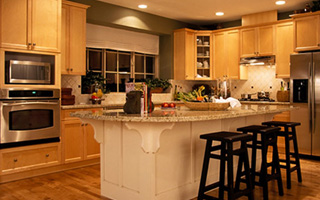
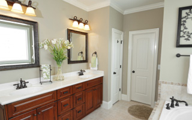

Your Experienced & Reliable Branford Roofing & Remodeling Contractor
Welcome to Total Exteriors, LLC. We are a locally owned Branford roofing and remodeling company providing residential roofing and remodeling services to all of New Haven County including the towns along the coastal corridor from East Haven up to New London. Our owner, Dana Mickelson, is dedicated to helping you with your roofing or remodeling project. He will assist you in repairing and improving your home with honesty, quality and affordable prices. Dana and his team are here to help you, the homeowner, through every step of your roofing or remodeling project by taking away your stress and making it an enjoyable and easy process for you and your family.
Since 2002, Dana and his team at Total Exteriors, LLC have been providing superior quality home services to residential clients just like you. Our Branford remodeling contractors are dedicated to creating beautiful living space for your family, and doing so with great customer service and attention to detail. Dana and his professional staff are ready to help with everything from initial planning of your residential remodeling project through the final clean up and walk through. His commitment to quality remodeling is only matched by our dedication to your complete satisfaction.
Professional Roofing, Siding, Home Additions, Kitchen Remodeling & Bathroom Remodeling in Branford, CT and the Surrounding Areas.

Kitchen Remodeling
